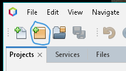
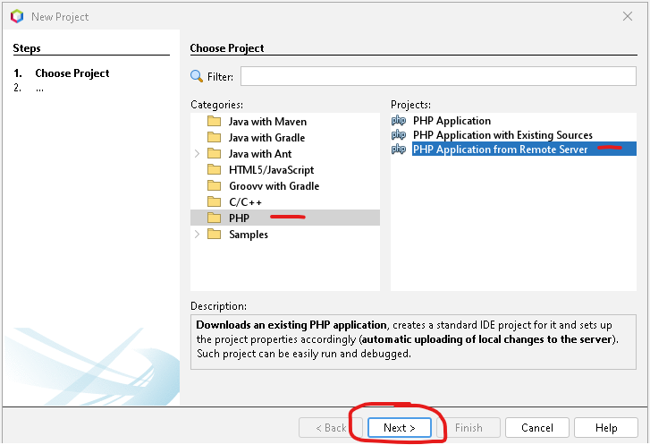
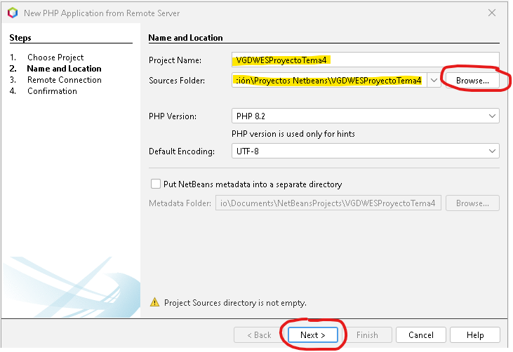
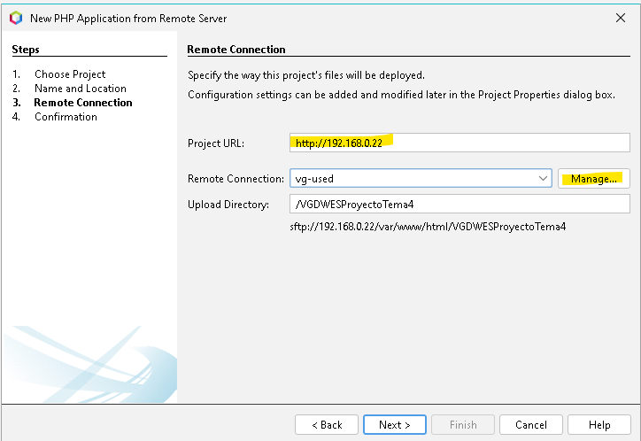
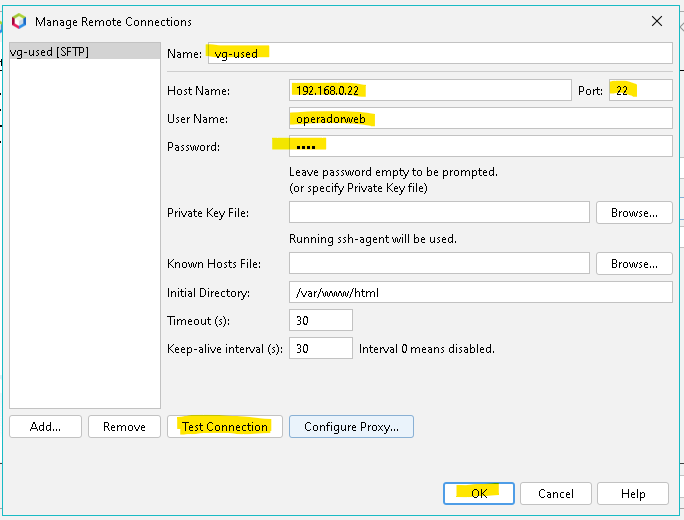
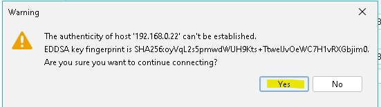
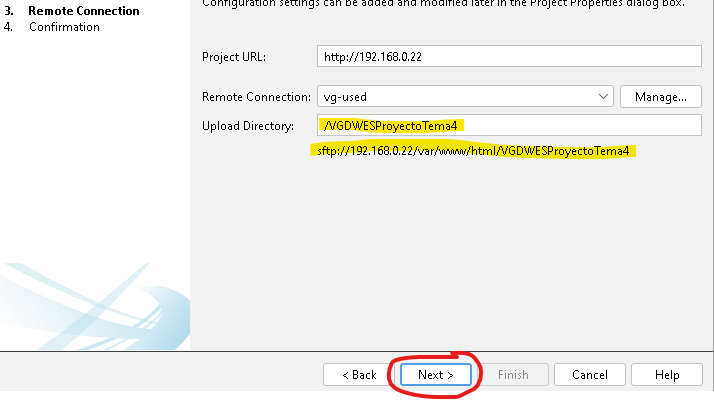
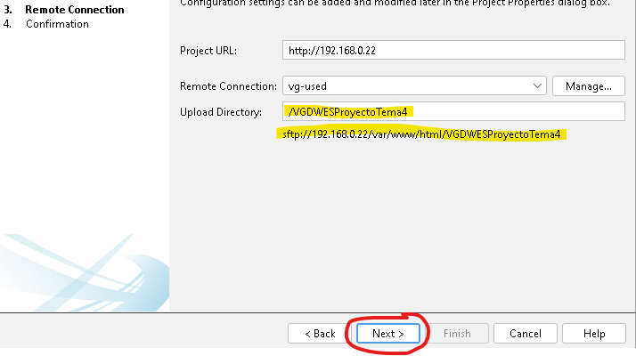
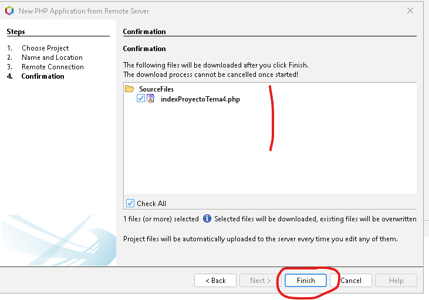
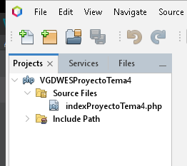

| DAW/DWES Tema2 |
|---|
|
| INSTALACIÓN, CONFIGURACIÓN Y DOCUMENTACIÓN DE ENTORNO DE DESARROLLO Y DEL ENTORNO DE EXPLOTACIÓN |
Este documento es una guía detallada del proceso de instalación y configuración de un servidor de aplicaciones en Ubuntu Server utilizando Apache, con soporte PHP y MySQL
Nombre de la máquina: daw-used
Memoria RAM: 2G
Particiones: 150G(/) y resto (/var)
Configuración de red interface: xxxx
Dirección IP :xx.xx.xx.xx/22
GW: xx.xx.xx.xx/22
DNS: xx.xx.xx.xx
Editar el fichero de configuración del interface de red /etc/netplan,
# This is the network config written by 'subiquity'
network:
ethernets:
enp0s3:
addresses:
- 10.199.10.49/22
nameservers:
addresses:
- 10.151.123.21
- 10.151.126.21
routes:
- to: default
via: 10.199.8.1
search: [educa.jcyl.es]
version: 2
sudo apt update
sudo apt upgrade
Establecer fecha, hora y zona horaria
como activar cortafuegos
sudo ufw enable
Descargar la iso de Ubuntu Server en la página (Server install image) : https://releases.ubuntu.com/noble/
Para saber que sistema operativo se tiene.
uname -a
Crear el servidor en la maquina virtual con los datos de configuración configurando la red de la maquina en adaptador puente y instalar el servidor siguiendo la configuración.
sudo apt update
sudo apt upgrade
ip a
ip r
hostname
sudo cp 50-cloud-init.yaml 50-cloud-init.yaml.backup
sudo mv 50-cloud-init.yaml enp0s3.yaml
lsblk
o
df -h
sudo netplan apply
sudo ufw enable
sudo ufw allow 22
sudo ufw status numered
sudo ufw delete [num de proceso]
sudo ufw status
sudo ping [IP Anfitrion]
timedatectl set-timezone Europe/Madrid
date
ping [IP servidor]
ssh usuario@ipServidor
sudo shutdown -t 0
sudo usermod -aG sudo miadmin2
cat /etc/group | grep miadmin
cat /etc/passwd | grep miadmin
sudo usermod -s /bin/bash miadmin
-d /var/www/html → Establece /var/www/html como directorio home del usuario.
-N → No crea un grupo con el mismo nombre que el usuario.
-g www-data → Asigna el grupo primario www-data.
-s /bin/bash → Asigna la shell Bash.
sudo useradd -M -d /var/www/html -N -g www-data -s /bin/bash operadorweb
sudo apt update
sudo apt upgrade -y
sudo apt install software-properties-common -y
sudo add-apt-repository ppa:ondrej/php -y
Para ver si el repositorio se ha instalado correctamente:
ls /etc/apt/sources.list.d/ | grep ondrej
Para actualizar los repositorios después de añadir el PPA:
sudo apt update
sudo apt install php8.3 libapache2-mod-php8.3 php8.3-fpm -y
Configuración del Multi-Processing Module (MPM) El módulo mpm_prefork y libapache2-mod-php8.3 (mod_php) no pueden funcionar al mismo tiempo que mpm_event y proxy_fcgi (necesario para PHP-FPM). Necesitamos desactivar los primeros.
Se desactiva el módulo mod_php: Esto elimina la dependencia con mpm_prefork.
sudo a2dismod php8.3
Se desactiva mpm_prefork:
sudo a2dismod mpm_prefork
Activa mpm_event y proxy_fcgi: Estos módulos habilitan la comunicación con PHP-FPM.
sudo a2enmod mpm_event proxy_fcgi
Habilita la configuración de PHP-FPM para Apache.
Bash
sudo a2enconf php8.3-fpm Reinicia el servidor Apache Reinicia Apache para aplicar todos los cambios de módulos y configuraciones:
sudo systemctl restart apache2
Se crea el archivo info.php en el directorio /var/www/html:
sudo nano /var/www/html/info.php
Se pega el siguiente código dentro del archivo info.php:
PHP
Se verifica en el navegador accediendo a la IP de tu máquina virtual
http://IP/info.php
Se edita el archivo de configuración de PHP-FPM:
´´´bash sudo nano /etc/php/8.3/fpm/php.ini
Se busca y se cambian los siguientes valores:(Ctrl+W)
display_errors = On
display_startup_errors = On
memory_limit = 256M
Se Reinicia el servicio PHP-FPM para aplicar los cambios:
```bash
sudo systemctl restart php8.3-fpm


En el primer paso de la creación de projyecto, se selecciona PHP en Categories, y PHP Aplicación from Remote Server y se hace clic en Next

En el paso 2 se indica el nombre del proyecto, y la ubicación en local y se hace clic en Next 
En el paso 3 se indica la IP del servidor... 
y se hace clic en Manage... para configurar la conexion al servidor remoto, donde se indicará el nombre del servidor, la IP , el puerto, el nombre del usuario con permisos para actuar en las carpetas del proyecto, la contraseña.... 
se hace un test de conexión y saldrá un mensaje de confirmación

hacer clic en Yes, si el test es ok, hacer clic en OK...(el servidor remoto tiene que estar encendido sino no hace la conexion)
 se cierra la ventana de conexion se indica la ubicación de la carpeta del proyecto en el servidor y se hace clic en Next en la ventana del paso 3.

se cierra la ventana de conexion se indica la ubicación de la carpeta del proyecto en el servidor y se hace clic en Next en la ventana del paso 3.

Sale de nuevo el mensaje de Confirmación de conexión y se hace clic en Yes.
Se checkea que la carpeta del proyecto tenga todos los elementos necesarios y se hace clic en finish. 
Sale de nuevo el mensaje de Confirmación de conexión y se hace clic en Yes.
El proyecto aparecerá en la parte izquierda del IDE. 
Véronique Grué
Curso: 2025/2026
2º Curso CFGS Desarrollo de Aplicaciones Web
Despliegue de aplicaciones web